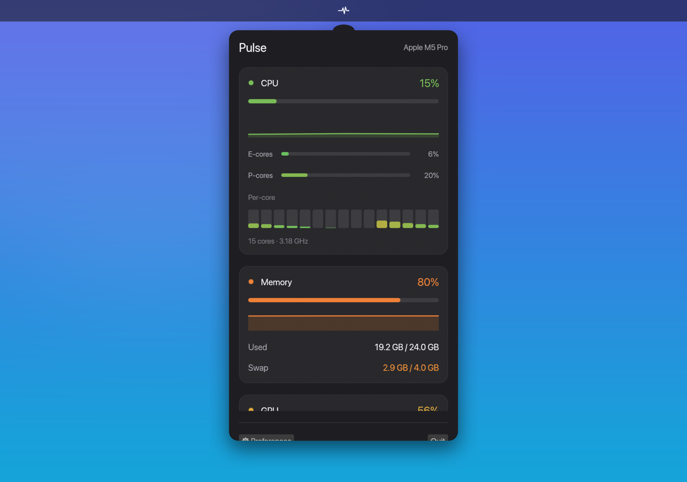

A macOS menu-bar monitor for live
CPU, memory, GPU, disk, and network stats.

sudoPulse is signed ad-hoc, so macOS blocks it on first launch. Any one of these opens it, and you only do it once:
Pulse.app in Finder → Open → Open./usr/bin/xattr -dr com.apple.quarantine /Applications/Pulse.app